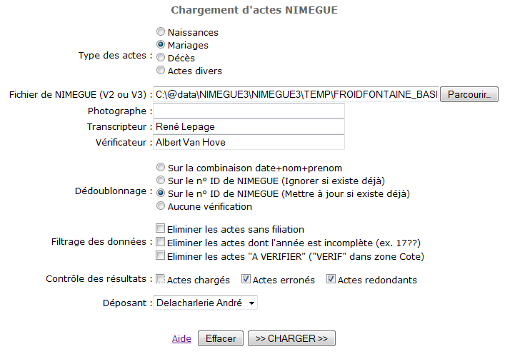

Charger des actes NIMEGUE V2 ou V3
Retour à la liste des fichiers d'aide
Cette fonction permet de charger des
actes encodés à l'aide du programme NIMEGUE (version 2 ou version 3)
développé par Gilles DAVID : voir le site
du logiciel et le groupe de
discussion consacré au programme. Le programme ExpoActes reconnait automatiquement la version du fichier
d'export qui lui est présentée. Il faut savoir que les modifications apportée par la version 3
concernent essentiellment l'allongement de plusieurs zones, et l'ajout de champs permettant de préciser des
données plus rares mais parfois rencontrées : professions des mères, nom et prénom des
ex-conjoints de plusieurs intervenants, ... ainsi que, à partir de la version 3.06, liste des photographies
de l'acte.
Pour préparer les actes à transférer sur votre site
ExpoActes, il faut exporter les données à partir de NIMEGUE en
suivant les instructions suivantes :
- Dans le panneau "Outils", presser le bouton "Export Nimègue V3" (ou V2 le cas échénat);
- Sélectionner la commune concernée;
- Taper un nom pour le fichier. Le plus simple pour s'y retrouver
consiste à donner le nom de la commune suivi d'une lettre
identifiant le type des actes qui vont être exportés (par
exemple DINANT_N pour les naissances de DINANT);
- Presser le bouton "Export" en rapport avec le type d'acte
voulu.
Le fichier est créé dans le répertoire TEMP du logiciel
NIMEGUE avec l'extension .TXT .
Pour charger, cet export dans ExpoActes, il faut procéder comme suit
:
- Sélectionner le menu "Charger des actes NIMEGUE" ;

- Sélectionner le type des actes;
- Naviguer jusqu'au fichier précédemment exporté avec le bouton
"Parcourir..." et le sélectionner;
- Introduire les nom des personnes qui ont collaboré à la mise en ligne de ces actes. Pour cela
trois zones sont disponibles. Il est possible d'en modifier la dénomination et de déterminer
dans quelle mesure elles seront affichées dans la fiche détaillée de l'acte en mode
visiteur et/ou administrateur. Se reporter à la gestion des
étiquettes pour cette gestion.
- Choisir le mode de dédoublonnage :
- Sur la combinaison date+nom+prenom : Les actes ayant le même
date et les mêmes patronyme et prénom seront considérés
comme des doublons et seront donc ignorés;
- Sur le n° ID de NIMEGUE (Ignorer si existe déjà):
Les actes de la même commune ayant le même n° d'identification
interne (fourni par NIMEGUE) seront considérés comme des
doublons et seront donc ignorés;
- Sur le n° ID de NIMEGUE (Mettre à jour si existe déjà):
Les actes de la même commune ayant le même n° d'identification
interne (fourni par NIMEGUE) seront considérés comme des
versions mises à jour et seront donc remplacés par la nouvelle
version.
- Aucune vérification : Ici plus aucune vérification
n'est effectuée. Cela permet d'accélérer le chargement
lorsque l'on est certain que les données sont déjà
vérifiées.
- Cocher éventuellement une option de filtrage des données
:
-
- éliminer les actes sans filiation
: Ne charge pas les actes pour lesquels il n'y a aucune indication
de père ou mère pour la personne concernée par l'acte;
- éliminer les actes dont l'année
est incomplète : Ne charge pas les actes pour
lesquels l'année de l'acte n'est pas complète (exemple : 17??
ou 0000 ou 165x) ;
- éliminer les actes "A VERIFIER"
: Ne charge pas les actes qui contiennent le texte "VERIF" dans la zone
"Cote". Cette option permet de marquer dans NIMEGUE les actes dont
le contenu doit être vérifié avant publication.
- Cocher selon les besoins les informations souhaitées pour le contrôle
du chargement. L'affichage de ces informations ralenti le chargement mais
facilite la détection et la recherche des anomalies éventuelles.
Lorsqu'un n° est affiché entre parenthèses, il s'agit du
n° de la ligne du fichier NIMEGUE qui cause le soucis.
- Séléctionner le déposant : c'est en principe la
personne qui effectue le chargement des actes. Cette
option n'est disponible que pour les adminstrateurs qui peuvent charger des
données pour plusieurs déposants. A partir de la version 3, cette mention est de moins
d'importance car les trois zones Photographe, Transcripteur et Vérificateur offrent bien plus de
facilités pour référencer les contributeurs.
- Presser le bouton ">> CHARGER >>".
Pour chaque acte, le programme vérifie si la base ne contient pas déjà
cet acte selon les règles de dédoublonnage. Si l'acte est déjà
présent et que l'option mise à jour é été sélectionnée,
les données sont simplement mises à jour sinon, il est ajouté.
Pour pouvoir faire une mise à jour d'actes, tous les actes d'un type
et d'une commune donnée doivent donc provenir de la même base NIMEGUE
sinon ExpoActes ne pourra pas correctement détecter les doublons éventuels.
La taille des fichiers qui peuvent être chargés est limitées
par les possibilités de téléchargement de l'hébergement
(souvent limité à 2 Mo). Si le fichier NIMEGUE est plus important
il est indispensable de le découper en portions de 2 Mo maximum. Il est
important d'utiliser un logiciel editeur de texte "neutre" qui n'ajoute
pas de codes et ne se permet pas de modifier d'autorité certains éléments
du fichier (TextPad est mon préféré
mais il n'est pas le seul). Il faut alors bien veiller à couper le fichier
à un saut de ligne.
Lorsque le fichier NIMEGUE est assez volumineux (mais inférieur à
2 Mo) le chargement est souvent trop long pour s'effectuer dans le temps imparti
pour l'exécution d'une page web (en général 30 secondes).
Expoactes veille alors à découper le chargemet en plusieurs
étapes qui s'enchainent automatiquement avec des interruptions
de 5 à 10 secondes. Il suffit de laisser travailler le programme sans
interragir.
Sommaire de l'aide